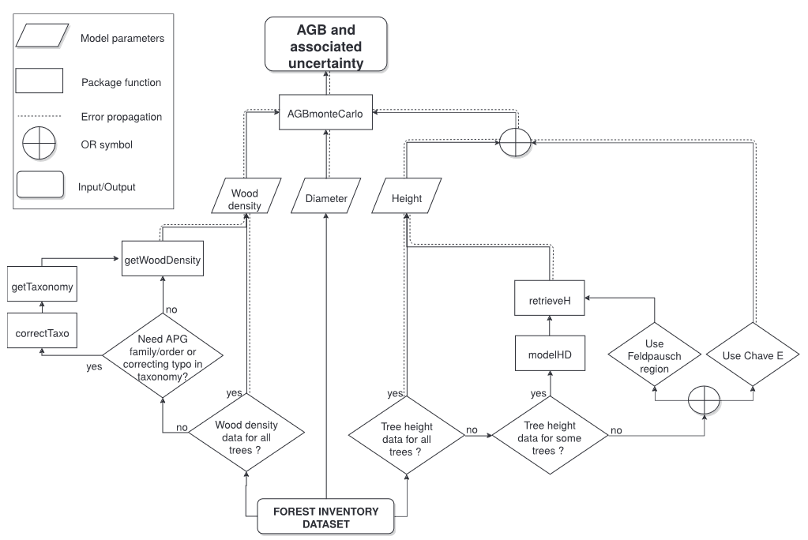
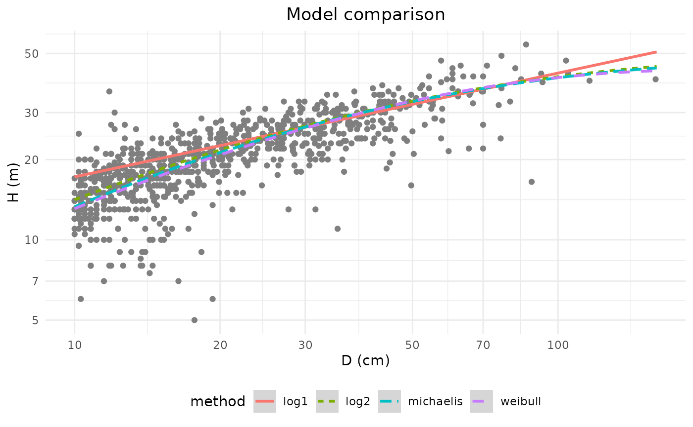
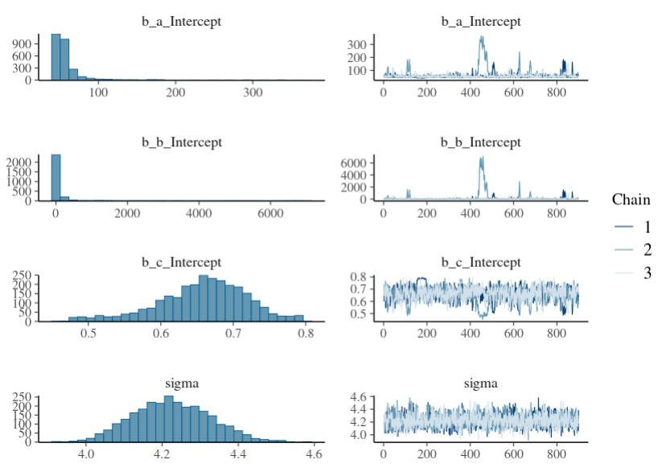
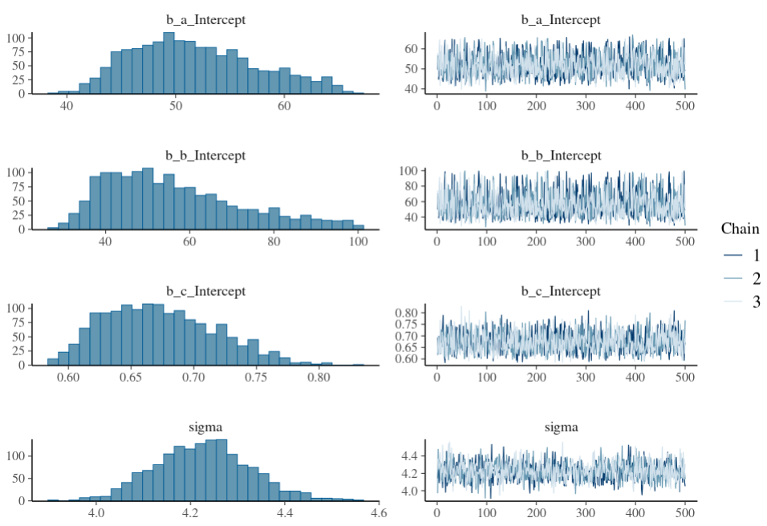

Estimating stand biomass
Arthur Bailly
2025-10-06
Source:vignettes/Vignette_BIOMASS.Rmd
Vignette_BIOMASS.RmdGeneral workflow and required data
For the sake of clarity, and to be consistent with the BIOMASS paper (Réjou-Méchain et al. 2017), this vignette follows the same workflow as presented in the paper:

As can be seen, the estimate of the above ground biomass (AGB) of a tree, and its associated uncertainty, is based on its wood density, diameter, and height.
However, exhaustive values of wood density and height are rarely available in forest inventory data. This is why the package proposes an estimate of these two covariables, based on more usual data.
In this vignette, we will use some of the data obtained in 2012 from a forest inventory conducted in 2012 in the Nouragues forest (French Guiana). For educational purpose, some virtual trees have been added to the data.
| Site | Plot | Xfield | Yfield | Family | Genus | Species | D | |
|---|---|---|---|---|---|---|---|---|
| 14 | Petit_Plateau | 201 | 0.0 | 31.5 | Burseraceae | Protium | surinamense | 11.0 |
| 44 | Petit_Plateau | 201 | 0.1 | 75.2 | Anacardiaceae | Tapirira | guianensis | 74.4 |
| 13 | Petit_Plateau | 201 | 0.2 | 27.6 | Lecythidaceae | Indet.Lecythidaceae | Indet. | 25.4 |
| 2810 | Petit_Plateau | 201 | -4.0 | 67.5 | Euphorbiaceae | Conceveiba | guyanensis | 10.0 |
| 24 | Petit_Plateau | 201 | 0.3 | 39.9 | Burseraceae | Protium | altissimum | 18.9 |
| 12100 | Petit_Plateau | 201 | -3.5 | 41.5 | Euphorbiaceae | Mabea | speciosa | 10.0 |
These data do not contain any information on wood density or height of trees. Only diameter is known, as no estimate can be made without this information.
Wood density
Wood density is estimated from tree taxonomy, using the global wood density database as a reference. So the first step might be to correct tree taxonomy.
Checking and retrieving tree taxonomy
This is done with the correctTaxo() function, but before
calling it, let’s speak about cache !
When the function is called for the first time with the argument
useCache = TRUE, a temporary file containing the request to
TNRS will be automatically
created in an existing folder. Once this has been done, during the
current session the use of useCache = TRUE will
access the saved temporary file in order to avoid
time-consuming replication of server requests. But by quitting
the current R session, this temporary file will be removed. So
before calling correctTaxo(), we advise you to define a
folder which will host the cache file permanently, enabling to work
offline.
# By default
createCache()
# Or if you want to set your own cache folder
createCache("the_path_to_your_cache_folder")
# Or
options("BIOMASS.cache" = "the_path_to_your_cache_folder")That said, let’s continue with the call to correctTaxo()
function:
Taxo <- correctTaxo(
genus = NouraguesTrees$Genus, # genus also accepts the whole species name (genus + species) or (genus + species + author)
species = NouraguesTrees$Species,
useCache = TRUE, verbose = FALSE)
saveRDS(Taxo, file = "saved_data/Taxo_vignette.rds")The corrected genus and species of the trees can now be added to the data:
NouraguesTrees$GenusCorrected <- Taxo$genusCorrected
NouraguesTrees$SpeciesCorrected <- Taxo$speciesCorrectedHere, as an example, the species name of the fourth tree has been corrected from “guyanensis” to “guianensis” (the fourth row of correctTaxo() output has a TRUE value for the column nameModified) :
NouraguesTrees$Species[4]
#> [1] "guyanensis"
Taxo[4,]
#> genusCorrected speciesCorrected nameModified
#> 4 Conceveiba guianensis TRUEIf you want (but this is optional for the rest), you can retrieve APG III families and orders from genus names.
APG <- getTaxonomy(NouraguesTrees$GenusCorrected, findOrder = TRUE)
NouraguesTrees$familyAPG <- APG$family
NouraguesTrees$orderAPG <- APG$orderGetting wood density
Wood densities are retrieved using getWoodDensity()
function. By default, this function assigns to each taxon a species- or
genus-level average if at least one wood density value of the same
species or genus is available in the reference database. For
unidentified trees or if the genus is missing in the reference database,
the stand-level mean wood density is assigned to the tree.
wood_densities <- getWoodDensity(
genus = NouraguesTrees$GenusCorrected,
species = NouraguesTrees$SpeciesCorrected,
stand = NouraguesTrees$Plot # for unidentified or non-documented trees in the reference database
)
#> The reference dataset contains 16467 wood density values
#> Your taxonomic table contains 408 taxa
NouraguesTrees$WD <- wood_densities$meanWDFor information, here are the number of wood density values estimated at the species, genus and plot level:
# At species level
sum(wood_densities$levelWD == "species")
#> [1] 1291
# At genus level
sum(wood_densities$levelWD == "genus")
#> [1] 586
# At plot level
sum(!wood_densities$levelWD %in% c("genus", "species"))
#> [1] 173The family argument also assigns to the trees a
family-level wood density average, but bear in mind that the
taxon-average approach gives relatively poor estimates above the genus
level (Flores & Coomes 2011).
Additional wood density values can be added using
the addWoodDensityData argument (here invented for the
example):
LocalWoodDensity <- data.frame(
genus = c("Paloue", "Handroanthus"),
species = c("princeps", "serratifolius"),
wd = c(0.65, 0.72) )
add_wood_densities <- getWoodDensity(
genus = NouraguesTrees$GenusCorrected,
species = NouraguesTrees$SpeciesCorrected,
family = NouraguesTrees$familyAPG,
stand = NouraguesTrees$Plot,
addWoodDensityData = LocalWoodDensity
)Height
As tree height measurements are rare, or rarely exhaustive, BIOMASS proposes three methods to estimate tree height:
If a subset of well-measured trees is available in the studied region:
- Construct a local Height–Diameter (H-D) allometry
If not:
- Use the continent- or region-specific H–D models proposed by Feldpausch et al. (2012)
- Use a generic H–D model based on a single bioclimatic predictor E (eqn 6a in Chave et al. 2014)
Building a local H-D model
As no height measurements is available in the
NouraguesTrees dataset, we will use the
NouraguesHD dataset which contains the height and diameter
measurements of two 1-ha plots from the Nouragues forest.
data("NouraguesHD")The modelHD() function is used to either compare
four implemented models to fit H–D relationships in the tropics,
or to compute the desired H-D model.
Here we first compare the four H-D models using linear regression (for log^1 and log^2 models) or nonlinear least squares estimates (for Michaelis-Menten and Weibull models) :
HD_res <- modelHD(
D = NouraguesHD$D, H = NouraguesHD$H,
useWeight = TRUE, drawGraph = T)
kable(HD_res)| method | RSE | RSElog | Average_bias |
|---|---|---|---|
| log1 | 4.700088 | 0.2472750 | 0.0890365 |
| log2 | 4.329727 | 0.2240379 | 0.0385429 |
| weibull | 4.307951 | NA | 0.0028240 |
| michaelis | 4.294488 | NA | 0.0145642 |
As the log2 model has the lowest RSE, we will build this model using
the method argument and add its predictions to the dataset
with the retrieveH() function:
HDmodel <- modelHD(
D = NouraguesHD$D, H = NouraguesHD$H,
method = "log2", useWeight = TRUE)
H_model <- retrieveH(
D = NouraguesTrees$D,
model = HDmodel)
NouraguesTrees$H_model <- H_model$HBy setting bayesian = TRUE in modelHD()
arguments, we could have built bayesian models using the brms package
(see section Building bayesian
Height-Diameter models).
Note that if some of the trees’ heights had been measured in the
NouraguesTrees dataset, we could have provided these
heights to modelHD(). In this case, we could also have
created a model for each stand/sub-region present in
NouraguesTrees using the plot argument. But
keep in mind that even for well-measured trees, retrieveH()
gives you the predicted height (see this section).
Using the continent- or region-specific H–D model (Feldpausch)
No need to compute any model here, as the predictions of the model
proposed by Feldspausch et al. are directly retrieved by the
retrieveH() function. Simply indicate the region
concerned:
H_feldspausch <- retrieveH(
D = NouraguesTrees$D,
region = "GuianaShield")
NouraguesTrees$H_feldspausch <- H_feldspausch$HAvailable regions are listed in the documentation of the function.
Using the generic H–D model based on a bioclimatic predictor (Chave)
In the same way as for the previous model, the predictions of the
model proposed by Chave et al. are directly retrieved by the
retrieveH() function. Coordinates of the plot (or trees) in
a longitude/latitude format must be provided.
Estimate AGB
Once tree diameter, wood density and height have been retrieved, the
generalised allometric model (eqn 4 of Chave
et al. (2014)) can be used with the computeAGB()
function, where AGB values are reported in Mg instead of in kg:
NouraguesTrees$AGB <- computeAGB(
D = NouraguesTrees$D,
WD = NouraguesTrees$WD,
H = NouraguesTrees$H_model #here with the local H-D predictions
)For AGB estimates using tree heights obtained by the “Chave method” (H_chave), it is more accurate to provide the area coordinates directly instead of the tree height estimates:
NouraguesTrees$AGB_Chave <- computeAGB(
D = NouraguesTrees$D,
WD = NouraguesTrees$WD,
coord = coords)Propagate AGB errors
The AGBmonteCarlo() function allows the user to
propagate different sources of error up to the final AGB estimate.
The error propagation due to the uncertainty of the model parameters of the AGB allometric equation (Chave et al. 2014) is automatically performed by the function. However, the propagation of the error due to the uncertainty of the model variables (D, WD and H) can be parameterized by the user.
Diameter measurement error
Using the Dpropag argument of the
AGBmonteCarlo() function, the user can set diameter
measurement errors by:
- providing a standard deviation value corresponding to the
measurement uncertainty (e.g
Dpropag = 1) - providing a vector of standard deviation values associated with each tree measurement uncertainty
- using the implemented example of Chave et al. 2004 with
Dpropag = "chave2004", where small errors are applied on 95% of the trees and large errors to the remaining 5%
D_error_prop <- AGBmonteCarlo(
D = NouraguesTrees$D, WD = NouraguesTrees$WD, H = NouraguesTrees$H_model,
Dpropag = "chave2004",
errWD = rep(0,nrow(NouraguesTrees)), errH = 0 # no error propagation on WD and H here
)Wood density error
The getWoodDensity() function returns prior standard
deviation values associated with each tree wood density using the mean
standard deviation of the global wood
density database at the species, genus and family levels.
This output can be provided through the errWD
argument:
WD_error_prop <- AGBmonteCarlo(
D = NouraguesTrees$D, WD = NouraguesTrees$WD, H = NouraguesTrees$H_model,
errWD = wood_densities$sdWD,
Dpropag = 0 , errH = 0 # no error propagation on D and H here
)Height error
The user can provide either a SD value or a vector of SD values
associated with tree height measurement errors, using the
errH argument.
-
If tree heights have been estimated via a local
HD-model, instead of the providing
errHandHarguments, the user has to provide the output of themodelHD()function using themodelHDargument:
H_model_error_prop <- AGBmonteCarlo(
D = NouraguesTrees$D, WD = NouraguesTrees$WD, # we do not provide H
HDmodel = HDmodel, # but we provide HDmodel
Dpropag = 0 , errWD = rep(0,nrow(NouraguesTrees)) # no error propagation on D and WD here
)Note that when HDmodel is not a bayesian model, uncertainties of the are not propagated during the error propagation of the AGBmonteCarlo() function.
-
If tree heights have been estimated via the “Feldspausch”
method, the user has to provide the output of the
retrieveH()function for theerrHargument:
H_feld_error_prop <- AGBmonteCarlo(
D = NouraguesTrees$D, WD = NouraguesTrees$WD,
H = NouraguesTrees$H_feldspausch, errH = H_feldspausch$RSE, # we provide H and errH
Dpropag = 0 , errWD = rep(0,nrow(NouraguesTrees)) # no error propagation on D and WD here
)-
If tree heights have been estimated via the “Chave”
method, the user has to provide the coordinates of the area (or
of the trees) using the
coordargument:
H_chave_error_prop <- AGBmonteCarlo(
D = NouraguesTrees$D, WD = NouraguesTrees$WD, # we do not provide H
coord = coords, # but we provide the vector of median coordinates of the plots
Dpropag = 0 , errWD = rep(0,nrow(NouraguesTrees)) # no error propagation on D and WD here
)All together and AGB visualisation of plots
Let’s propagate all sources of errors using the HD-model:
error_prop <- AGBmonteCarlo(
D = NouraguesTrees$D, WD = NouraguesTrees$WD, # we do not provide H
HDmodel = HDmodel, # but we provide HDmodel
Dpropag = "chave2004",
errWD = wood_densities$sdWD)
error_prop[(1:4)]
#> $meanAGB
#> [1] 1703.035
#>
#> $medAGB
#> [1] 1701.263
#>
#> $sdAGB
#> [1] 46.91725
#>
#> $credibilityAGB
#> 2.5% 97.5%
#> 1614.013 1800.008The first four elements of the output contain the mean, median,
standard deviation and credibility intervals of the total AGB of the
dataset but nothing about the AGB at the plot level. To do this, you can
use the summaryByPlot() function:
AGB_by_plot <- summaryByPlot(AGB_val = error_prop$AGB_simu, plot = NouraguesTrees$Plot, drawPlot = TRUE)
Finally, the last element ($AGB_simu) of the
AGBmonteCarlo() output is a matrix containing the simulated
tree AGB values (in rows) for each iteration of the Monte Carlo
procedure (in columns).
Some tricks
Mixing measured and estimated height values
If you want to use a mix of directly-measured height and of estimated ones, you can proceed as follows:
- Build a vector of H and RSE where we assume an error of 0.5 m on directly measured trees
# NouraguesHD contains 163 trees that were not measured
NouraguesHD$Hmix <- NouraguesHD$H
NouraguesHD$RSEmix <- 0.5
filt <- is.na(NouraguesHD$Hmix)
NouraguesHD$Hmix[filt] <- retrieveH(NouraguesHD$D, model = HDmodel)$H[filt]
NouraguesHD$RSEmix[filt] <- HDmodel$RSE- Apply the AGBmonteCarlo by setting the height values and their errors (which depend on whether the trees were directly measured or estimated)
wd <- getWoodDensity(NouraguesHD$genus, NouraguesHD$species)
resultMC <- AGBmonteCarlo(
D = NouraguesHD$D, WD = wd$meanWD, errWD = wd$sdWD,
H = NouraguesHD$Hmix, errH = NouraguesHD$RSEmix,
Dpropag = "chave2004"
)
summaryByPlot(AGB_val = resultMC$AGB_simu, plot = NouraguesHD$plotId, drawPlot = TRUE)Building bayesian Height-Diameter models
Since version 2.2.6, BIOMASS enables to build bayesian H-D models using the brms package.
As compiling the Stan programme may take some time the first time
around, we recommend setting the ‘useCache’ argument to TRUE in the
modelHD() function. This will save the model as a .rds file
in the defined cache path, meaning that next time, the model will simply
be loaded and updated, bypassing the compilation stage.
# First, define the user cache path
createCache("the_path_to_your_cache_folder")
# Or
options("BIOMASS.cache" = "the_path_to_your_cache_folder")
brm_model <- modelHD(
D = NouraguesHD$D, H = NouraguesHD$H,
method = "log2",
bayesian = TRUE, useCache = TRUE)
H_brm_model <- retrieveH(
D = NouraguesTrees$D,
model = brm_model)
NouraguesTrees$H_model <- H_brm_model$HIf the Michaelis-Menten or Weibull methods are used, you must pay close attention to the returned models as the algorithm is likely to identify numerous local minima for the estimated parameters. Here is an example of the Weibull method being used with the default arguments:
brm_model <- modelHD(
D = NouraguesHD$D, H = NouraguesHD$H,
method = "weibull",
bayesian = TRUE, useCache = TRUE)
plot(brm_model$model)
As one can see, the two first parameters a and b (resp. called
b_a_Intercept and b_b_Intercept) of the
Weibull equation:
are strongly correlated. Therefore, it is strongly recommended to define
priors that do not allow for unrealistic values. To do this, we need to
examine the meanings of the Weibull parameters:
-
acan be considered as the hypothetical maximum height, so defining a uniform prior between 0 and 80m seems realistic. -
bis the scaling parameter, so defining a uniform prior between 0 and a high value of D (e.g. the 90th percentile) makes sense. -
cis the shape parameter which must be between 0 and 1
Besides, since model parameters and chain iterations are strongly
correlated, an increase of thin, iter and
warmup is required (see the help of brms::brm() and this
page for more details).
The arguments of brms::brm() (cited above) can be
provided to modelHD():
weibull_priors <- c(
set_prior(prior = "uniform(0,80)", lb = 0, ub = 80, class = "b",nlpar = "a"),
set_prior(prior = "uniform(0,100)", lb = 0, ub = 100, class = "b",nlpar = "b"),
set_prior(prior = "uniform(0.01,0.99)", lb = 0.01, ub = 0.99, class = "b",nlpar = "c")
)
brm_model <- modelHD(D = NouraguesHD$D, H = NouraguesHD$H,
method = "weibull", bayesian = TRUE, useCache = TRUE,
prior = weibull_priors,
thin = 10, iter = 6000, warmup = 1000,
cores = 3 # number of cores = 3 since 3 chains are running
)
plot(brm_model$model)
Posterior distributions look better but the right-skewed distributions are not yet satisfactory. So we recommend using the log2 method when the RSE given by lm and nls models (when bayesian = FALSE) are close.
Add your tricks
If you would like to share a code that might be useful to users (code authorship will be respected), you can create a new issue on the BIOMASS github page, or contact Dominique (dominique.lamonica@ird.fr).